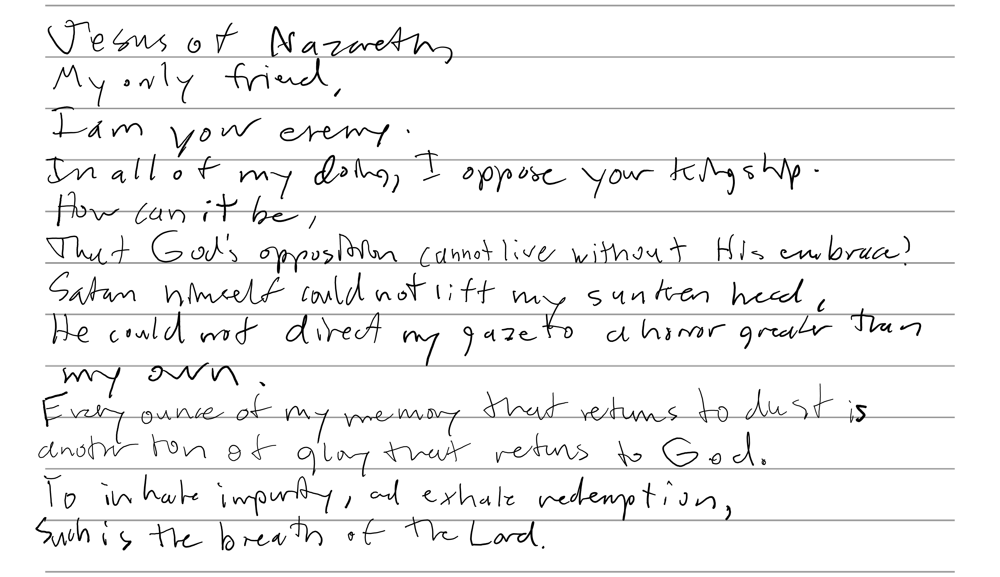

FRIDAY
Psalm 31:5
____ ____ ____ ____ ||D |||A |||N |||E || _________ ||__|||__|||__|||__|| || Enter || |/__\|/__\|/__\|/__\| ||_______|| ____ ____ ____ ____ ____ ____ ||H ||____ ____||R |||E |||C |||H |||T || ||__|||O |||B |||__|||__|||__|||__|||__|| |/__\||__|||__||/__\|/__\|/__\|/__\|/__\|
The Amatuer Musings of an End-Times Christian
Acts 5:38-39
Ecclesiastes 12:12
Matthew 14:31
"What good is healing if it isn't accredited to the Healer?" Much indeed. "But what good is healing if it does not bring Him Glory?" None at all. "Yet what is out of God's reach?" Nothing. Hear, and then do. †If you cannot do, you have not heard. ‡If you have not heard, you cannot do. †James 1:17, ‡James 1:22
 †John 3:16
You've left the Lord behind. Such wisdom! †What embrace is there for those who stay? Your heart is hardened shut. Such tender! ‡What would God reveal with a soft Pharaoh? You've lost your sense of sight. Such vision! ⹋What can open that hasn't been closed? Brothers and sisters, without mercy, grace, and forgiveness, we have nothing. This is the true end of The Way: that man would learn to die; To be what he won’t, And to love who he can't. †Luke 15:20, ‡Exodus 1:10, ⹋Matthew 5:3
Men and women of the academic secular, lend me your probabilities. In the presentation of such demanding truth, where are your calculations? Where has your mastery gone? †A man claimed to be God, and people believed him. Do we pretend not to know his name? “There is no need for a Savior.” Look! Where conservatives preserve the body of evil, progressives grow its appendages; Where one child is born, two disappear; Where community is exalted, ‡we renounce our neighbor. Did we gain? Nevertheless, God has not gifted you free will so that I might discourage you to use it; the Lord has weathered greater plagues than doubt. Even so, as we riddle with death: How does one, born of decay, preserve life? I do not pretend to understand the complexities of this life, ⹋but I do claim Christ as its resolution. †John 10:30, ‡Matthew 25:42-43, ⹋1 Corinthians 15:21-22
†Concern yourselves not with the things of the dark, for they are infinite in variety, and continue to multiply. Fight for love, no matter what Satan says, and no matter how far you stray. ‡Love is the meaning of life. †Ephesians 5:11-14, ‡1 John 4:7-12
Christian literature is unique in that it isn’t, but holistically dependent upon another Word. The means by which it freshens a man's heart is it's only divergence. Out of pretty words comes a dangerous arrogance. Nothing is as eloquent as careful obedience. Likewise, without the Spirit, may the following pieces fall. Amen.
![[Valid RSS]](assets/images/valid-rss-rogers.png "Validate my RSS feed")
______ ||PgUp|| ||____|| |/____\|